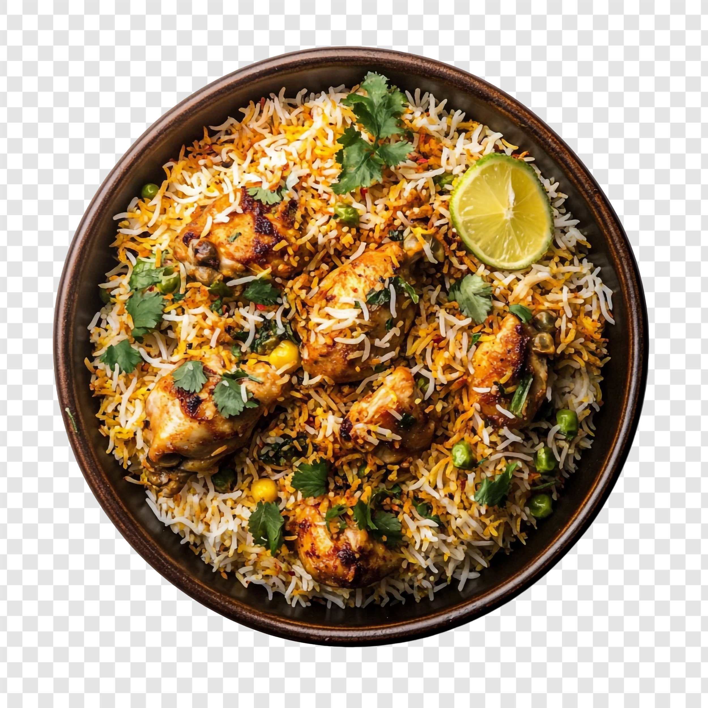

Home
Gosht (Lamb) Biryani Recipe

Description
Biryani is a flavorful, aromatic, and globally popular rice dish originating from South Asia.
It typically features layers of rice, meat (chicken, goat, lamb, beef), or vegetables, and is infused with spices like saffron, cardamom, and cumin.
The dish can be cooked using various methods, including the dum method, where the ingredients are layered and slow-cooked in a sealed pot.
Biryani is known for its complex flavors and is a beloved dish for celebrations and everyday meals.
Ingredients
- 2 ½ cups basmati rice
- ¼ cup cooking oil
- 8 whole cloves
- 4 black cardamom pods
- 4 cinnamon sticks
- 4 large onions, sliced thin
- 1 tablespoon garlic paste
- 1 tablespoon ginger paste
- ¼ cup chopped fresh cilantro leaves
- 3 tablespoons chopped fresh mint leaves
- 1 pound lamb chops
- salt to taste
- 3 tomatoes, chopped
- 4 green chile peppers, halved lengthwise
- 2 teaspoons ground red pepper
- 2 tablespoons plain yogurt
- 2 tablespoons lemon juice
- 7 ½ cups water
- 1 teaspoon salt
- 1 tablespoon vegetable oil
- 1 onion, sliced
- ½ teaspoon saffron
- 2 tablespoons warm milk
Steps
- Gather all ingredients.
- Place basmati rice in a large container and cover with several inches of cool water; let stand 30 minutes. Drain.
- Heat 1/4 cup oil in a large skillet over medium heat; add cloves, cardamom pods, and cinnamon sticks and cook in the hot oil until fragrant, about 1 minute. Add onions; cook and stir until onions are lightly browned, about 5 minutes. Stir garlic paste and ginger paste into onion mixture; cook until fragrant, about 1 minute. Sprinkle cilantro and mint over onion mixture and cook 1 minute more.
- Add lamb chops to the skillet; season with salt. Cook lamb until chops are browned on both sides, about 20 minutes.
- Stir in tomatoes, green chile peppers, and ground red pepper; continue cooking until oil begins to separate from the sauce, about 10 minutes. Add yogurt and lemon juice; cover and cook until the lamb is tender, about 15 minutes. Add some water as needed to keep mixture from getting too dry.
- Place rice, 7 ½ cups water, and 1 teaspoon salt in a saucepan; bring to a boil and simmer until rice is nearly done yet a little chewy, 10 to 15 minutes. Drain any excess water.
- Heat 1 tablespoon oil in a small skillet; add sliced onion and cook until lightly browned.
- Layer about ½ of the rice in the bottom of a deep pot with a lid. Spoon the lamb masala mixture over the rice. Spread fried onion over lamb masala. Top with remaining rice.
- Stir saffron and warm milk together in a small bowl; pour over top layer of rice. Cover the pot with the lid and place the pot over low heat; cook until the rice is thoroughly cooked, about 15 minutes.
- Serve and enjoy!